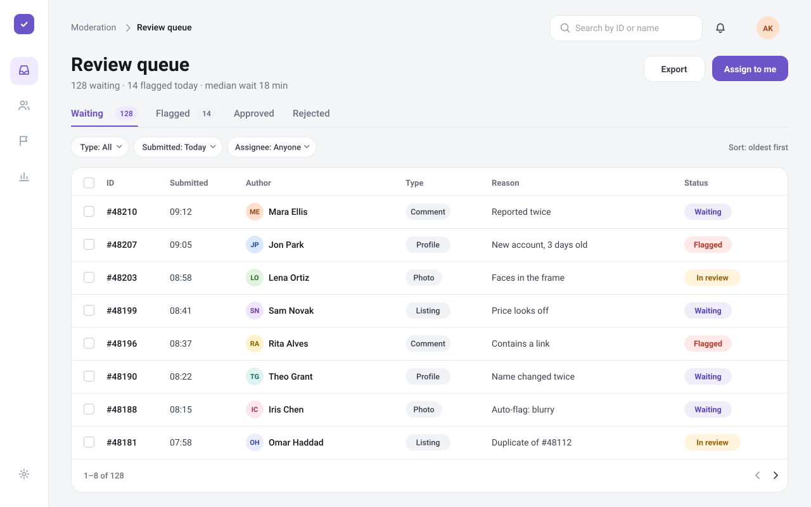
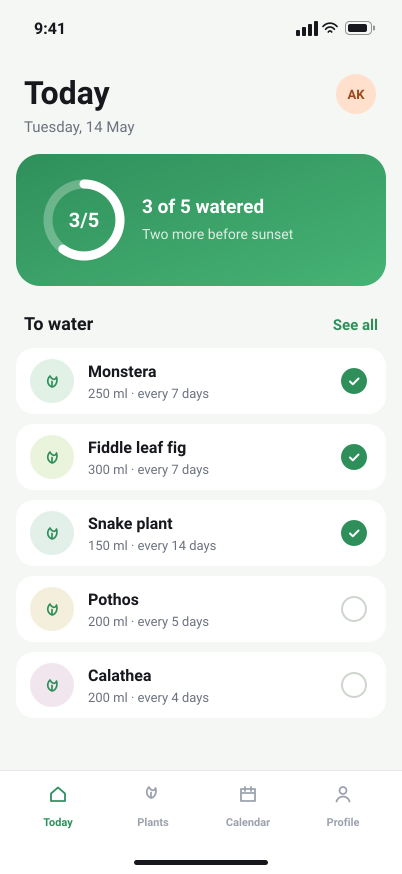

Scroll down: the device straightens--hs 0.000
B2B dashboard · Web · 2026
Review queue
One list for everything a moderator checks: what's waiting, what's flagged and why.


- Role
- Product designer
- Team
- Two designers, five engineers
- Timeline
- 2026, four months
- Platform
- Web, desktop
The brief
By the time the hero is 80% gone, the device faces you straight. The turn eases in over 0.9 s, so a fast flick still reads as one smooth move.
The object in front rises by 4% of the art's width and follows the mouse twice as far as the device: two layers at different depth make the scene feel like it has a camera.